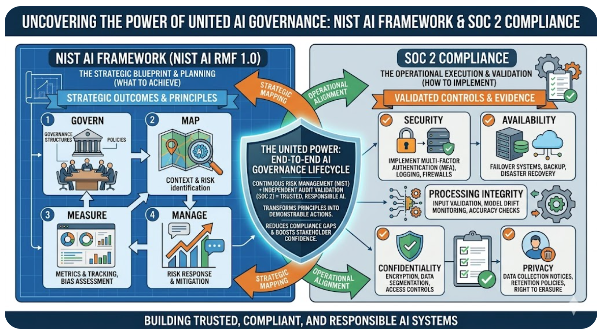

Purpose
Establish a clear, reproducible, and scalable governance model that aligns clinical, legal, compliance, and operational stakeholders while ensuring continuous safe, ethical, and effective AI deployment.
Key Considerations for Successful AI Governance
- Evolving Landscape: An AI Governance framework will continue to evolve and require ongoing attention.
- Customize Your Approach: Tailor the governance framework to your organization's specific needs and context.
- Strategy Alignment: Tie AI initiatives to measurable clinical and business outcomes.
- Risk Management: Document model limitations, bias controls, and monitoring plans.
- Security & Privacy: Enforce safeguards and data minimization practices.
- Operational Readiness: Define workflows, human oversight, and escalation paths.
- Lifecycle Governance: Approve, monitor, and retire AI solutions with clear accountability.
Where to Start
Two credible frameworks to establish a solid AI Governance and Risk Management foundation:
- NIST AI Risk Management Framework (AI RMF)
- SOC2 Reporting Framework

Implementation
NIST AI RMF
- Govern: Establish policies, roles, oversight, and accountability for responsible AI decisions.
- Map: Define the AI system context, intended use, stakeholders, data sources, and potential impacts. (model card components)
- Measure: Evaluate and track risks (e.g., bias, reliability, security, safety, and explainability) using evidence.
- Manage: Prioritize and treat identified risks through controls, monitoring, escalation, and continuous improvement.
SOC2 Framework
- Security: Protect systems against unauthorized access and threats through preventive and detective controls.
- Availability: Ensure systems are operational and accessible as committed in service objectives.
- Processing Integrity: Confirm system processing is complete, valid, accurate, timely, and authorized.
- Confidentiality: Safeguard sensitive information designated as confidential from improper disclosure.
- Privacy: Govern personal data collection, use, retention, disclosure, and disposal per policy and law.